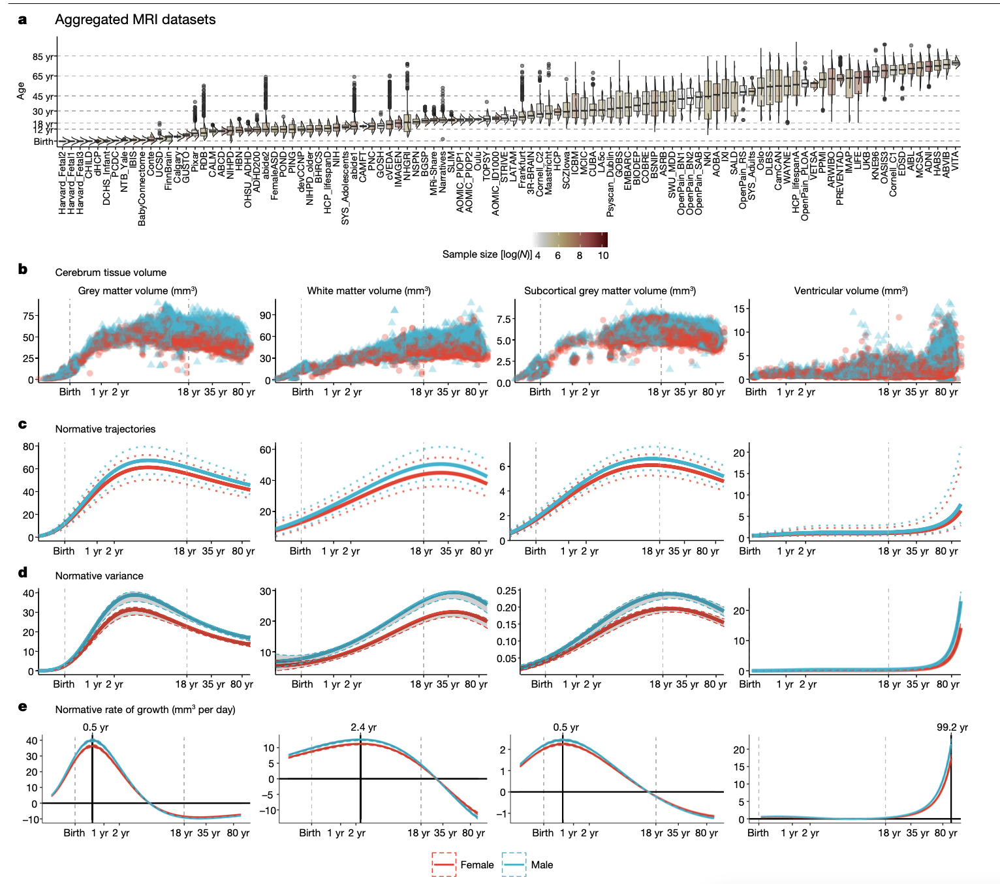
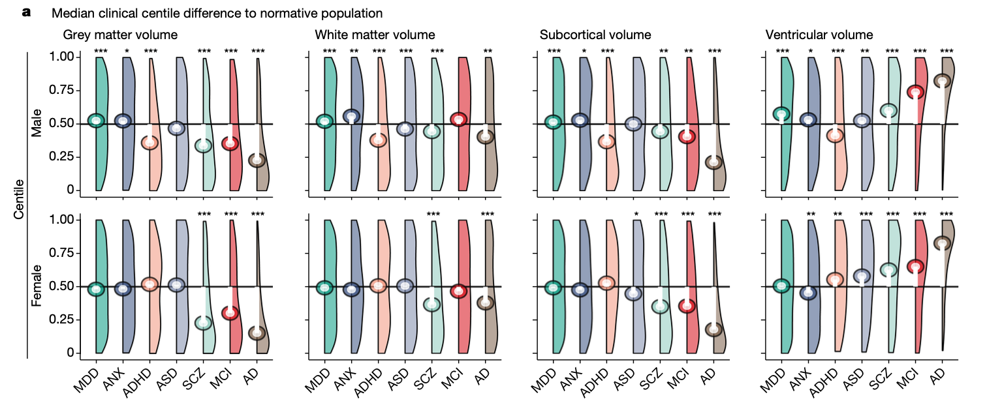
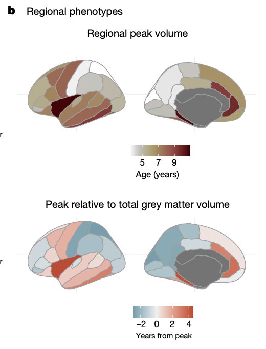
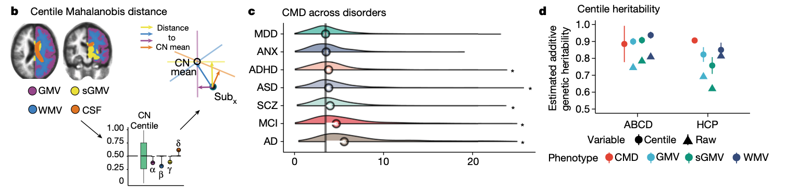
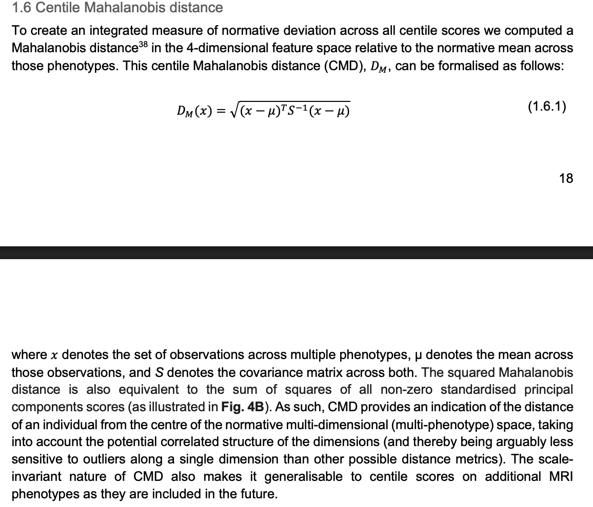

They then used the normative curves to estimate where people fall relative to someone of the same age and sex. For a new observation y_j, their centile is \mathbb{P}(Y \le y_j\mid \text{age}_j, \text{sex}_j, \text{site}_j, \text{software}_j)
Instead of conducting analyses relative to a control group, they compared the median of the centile values to 0.5.




\mathbb{E} \lVert \hat S - S \rVert^2/V
\mathbb{E} \lVert \hat S_1 - \hat S_2 \rVert^2 = 2 \mathrm{tr}\{\mathrm{Var}(\hat S_1)\} *
The idea is that you can fill in all aspects of the paper outline at a shallow depth. I’m expecting you work 4-8 hours a week including class time. When I grade your submission, I’ll think about these things:
.qmd file and compiled html or pdf.